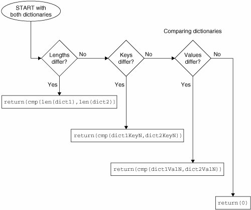

7.3. Mapping Type Built-in and Factory Functions7.3.1. Standard Type Functions [type(), str(), and cmp()]The type() factory function, when applied to a dict, returns, as you might expect, the dict type, "<type 'dict'>". The str() factory function will produce a printable string representation of a dictionary. These are fairly straightforward. In each of the last three chapters, we showed how the cmp() BIF worked with numbers, strings, lists, and tuples. So how about dictionaries? Comparisons of dictionaries are based on an algorithm that starts with sizes first, then keys, and finally values. However, using cmp() on dictionaries isn't usually very useful. The next subsection goes into further detail about the algorithm used to compare dictionaries, but this is advanced reading, and definitely optional since comparing dictionaries is not very useful or very common. *Dictionary Comparison AlgorithmIn the following example, we create two dictionaries and compare them, then slowly modify the dictionaries to show how these changes affect their comparisons: >>> dict1 = {}
>>> dict2 = {'host': 'earth', 'port': 80}
>>> cmp(dict1, dict2)
-1
>>> dict1['host'] = 'earth'
>>> cmp(dict1, dict2)
-1In the first comparison, dict1 is deemed smaller because dict2 has more elements (2 items vs. 0 items). After adding one element to dict1, it is still smaller (2 vs. 1), even if the item added is also in dict2. >>> dict1['port'] = 8080 >>> cmp(dict1, dict2) 1 >>> dict1['port'] = 80 >>> cmp(dict1, dict2) 0 After we add the second element to dict1, both dictionaries have the same size, so their keys are then compared. At this juncture, both sets of keys match, so comparison proceeds to checking their values. The values for the 'host' keys are the same, but when we get to the 'port' key, dict2 is deemed larger because its value is greater than that of dict1's 'port' key (8080 vs. 80). When resetting dict2's 'port' key to the same value as dict1's 'port' key, then both dictionaries form equals: They have the same size, their keys match, and so do their values, hence the reason that 0 is returned by cmp(). >>> dict1['prot'] = 'tcp' >>> cmp(dict1, dict2) 1 >>> dict2['prot'] = 'udp' >>> cmp(dict1, dict2) -1 As soon as an element is added to one of the dictionaries, it immediately becomes the "larger one," as in this case with dict1. Adding another key-value pair to dict2 can tip the scales again, as both dictionaries' sizes match and comparison progresses to checking keys and values. >>> cdict = {'fruits':1}
>>> ddict = {'fruits':1}
>>> cmp(cdict, ddict)
0
>>> cdict['oranges'] = 0
>>> ddict['apples'] = 0
>>> cmp(cdict, ddict)
14Our final example reminds as that cmp() may return values other than -1, 0, or 1. The algorithm pursues comparisons in the following order. (1) Compare Dictionary SizesIf the dictionary lengths are different, then for cmp (dict1, dict2), cmp() will return a positive number if dict1 is longer and a negative number if dict2 is longer. In other words, the dictionary with more keys is greater, i.e., len(dict1) > len(dict2) (2) Compare Dictionary KeysIf both dictionaries are the same size, then their keys are compared; the order in which the keys are checked is the same order as returned by the keys() method. (It is important to note here that keys that are the same will map to the same locations in the hash table. This keeps key-checking consistent.) At the point where keys from both do not match, they are directly compared and cmp() will return a positive number if the first differing key for dict1 is greater than the first differing key of dict2. (3) Compare Dictionary ValuesIf both dictionary lengths are the same and the keys match exactly, the values for each key in both dictionaries are compared. Once the first key with non-matching values is found, those values are compared directly. Then cmp() will return a positive number if, using the same key, the value in dict1 is greater than the value in dict2. (4) Exact MatchIf we have reached this point, i.e., the dictionaries have the same length, the same keys, and the same values for each key, then the dictionaries are an exact match and 0 is returned. Figure 7-1 illustrates the dictionary compare algorithm we just outlined. Figure 7-1. How dictionaries are compared7.3.2. Mapping Type Related Functionsdict ( )The dict() factory function is used for creating dictionaries. If no argument is provided, then an empty dictionary is created. The fun happens when a container object is passed in as an argument to dict(). If the argument is an iterable, i.e., a sequence, an iterator, or an object that supports iteration, then each element of the iterable must come in pairs. For each pair, the first element will be a new key in the dictionary with the second item as its value. Taking a cue from the official Python documentation for dict(): >>> dict(zip(('x', 'y'), (1, 2)))
{'y': 2, 'x': 1}
>>> dict([['x', 1], ['y', 2]])
{'y': 2, 'x': 1}
>>> dict([('xy'[i-1], i) for i in range(1,3)])
{'y': 2, 'x': 1}If it is a(nother) mapping object, i.e., a dictionary, then dict() will just create a new dictionary and copy the contents of the existing one. The new dictionary is actually a shallow copy of the original one and the same results can be accomplished by using a dictionary's copy() built-in method. Because creating a new dictionary from an existing one using dict() is measurably slower than using copy(), we recommend using the latter. Starting in Python 2.3, it is possible to call dict() with an existing dictionary or keyword argument dictionary (** function operator, covered in Chapter 11): >>> dict(x=1, y=2)
{'y': 2, 'x': 1}
>>> dict8 = dict(x=1, y=2)
>>> dict8
{'y': 2, 'x': 1}
>>> dict9 = dict(**dict8)
>>> dict9
{'y': 2, 'x': 1}We remind viewers that the dict9 example is only an exercise in understanding the calling semantics of dict() and not a realistic example. It would be wiser (and better performance-wise) to execute something more along the lines of: >>> dict9 = dict8.copy()
>>> dict9
{'y': 2, 'x' : 1}len()The len() BIF is flexible. It works with sequences, mapping types, and sets (as we will find out later on in this chapter). For a dictionary, it returns the total number of items, that is, key-value pairs: >>> dict2 = {'name': 'earth', 'port': 80}
>>> dict2
{'port': 80, 'name': 'earth'}
>>> len(dict2)
2We mentioned earlier that dictionary items are unordered. We can see that above, when referencing dict2, the items are listed in reverse order from which they were entered into the dictionary. hash()The hash() BIF is not really meant to be used for dictionaries per se, but it can be used to determine whether an object is fit to be a dictionary key (or not). Given an object as its argument, hash() returns the hash value of that object. The object can only be a dictionary key if it is hashable (meaning this function returns a[n integer] value without errors or raising an exception). Numeric values that are equal (when pitted against each other using a comparison operator) hash to the same value (even if their types differ). A TypeError will occur if an unhashable type is given as the argument to hash() (and consequently if an attempt is made to use such an object as the key when assigning a value to a dictionary): >>> hash([])
Traceback (innermost last):
File "<stdin>", line 1, in ?
TypeError: list objects are unhashable
>>>
>>> dict2[{}] = 'foo'
Traceback (most recent call last):
File "<stdin>", line 1, in ?
TypeError: dict objects are unhashableIn Table 7.1, we summarize these three mapping type related functions. |
 dict1 > dict2
dict1 > dict2